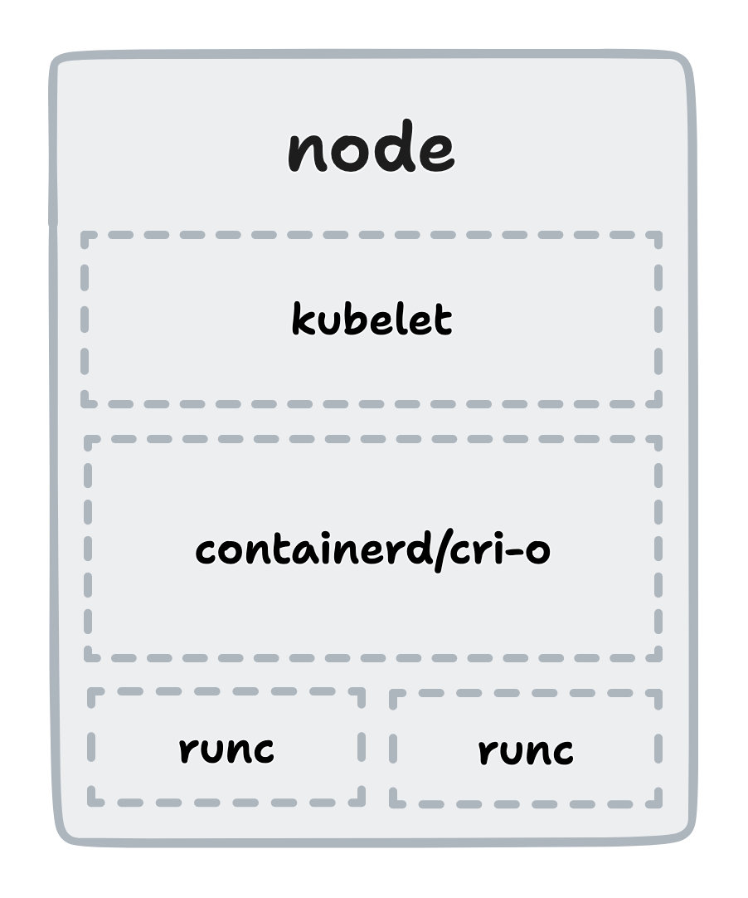

<style> @import url(https://fonts.googleapis.com/css?family=Nunito:400,700,400italic); .reveal { font-family: 'Nunito'; font-size: 1.5em; } .reveal h1, .reveal h2, .reveal h3, .reveal h4, .reveal h5 { font-family: 'Nunito'; text-transform: none; } </style> # Checkpoint and Restore in Kubernetes with CRIU
# Who dis? o_O <img alt="me" src="assets/profile.jpg" width="225px" /> ## Prajwal S N Rust@DeepSource\ GSoC'22@CRIU\ [snprajwal.com](https://snprajwal.com)
# CRIU? Is that like CRI-O? **CRI-O** is an OCI-compliant CRI (Oh!) implementation. **CRIU** (Checkpoint Restore In Userspace) is a Linux tool \ that can checkpoint processes to a collection of files \ and restore from them later.
# Why C/R? - Software breaks all the time - Backups are hard - Long startup times - Need for reproducible state
# How does C/R work? - Identify a running process with all related resources \ and write everything to a collection of files - Do whatever you want with the files (Move 'em? Sure. \ Change the PID? Sure. Nuke 'em? ... Sure!) - Restore the process from the files - ~~Explain to your co-workers why dev is down~~ Note: The most obvious resource you can think of is the memory occupied by the process. - files that the process reads from or writes to - open file descriptors - sockets - network connections - and maybe some other stuff
# Gimme dem details - CRIU defines a specific structure to store data \ for each type of resource - Uses protobuf as the standard format for serialising \ data into binary files (images) - Supports custom options to attach context
# Why is it hard?  You gotta make it work. Thrice.
# Current state of support - runc (2015) - LXC (2015) - Docker (2016) - containerd (2017) - Podman (2018) - Kubernetes (2022) Note: k8s v1.25 introduces C/R as an alpha feature
# Using C/R with k8s - Introduced as alpha feature in v1.25 - Enable the `ContainerCheckpoint` feature flag for the cluster - Configure the container runtime to use CRIU - `--enable-criu-support=true` for checkpointing - `--drop-infra-ctr=false` for restoring - Call the k8s API at `/checkpoint/<namespace>/<pod>/<container>` - Find your archive at `/var/lib/kubelet/checkpoints/<very-long-name>.tar` - Build and push an image from the archive and restore the pod from it
# Cool stuff you can do - Live migration of containers - Faster startup with state initialisation - Snapshots for debugging or analysis - Stateful reboots - Forensic analysis of containers - Dry runs of updates
# Thank you!